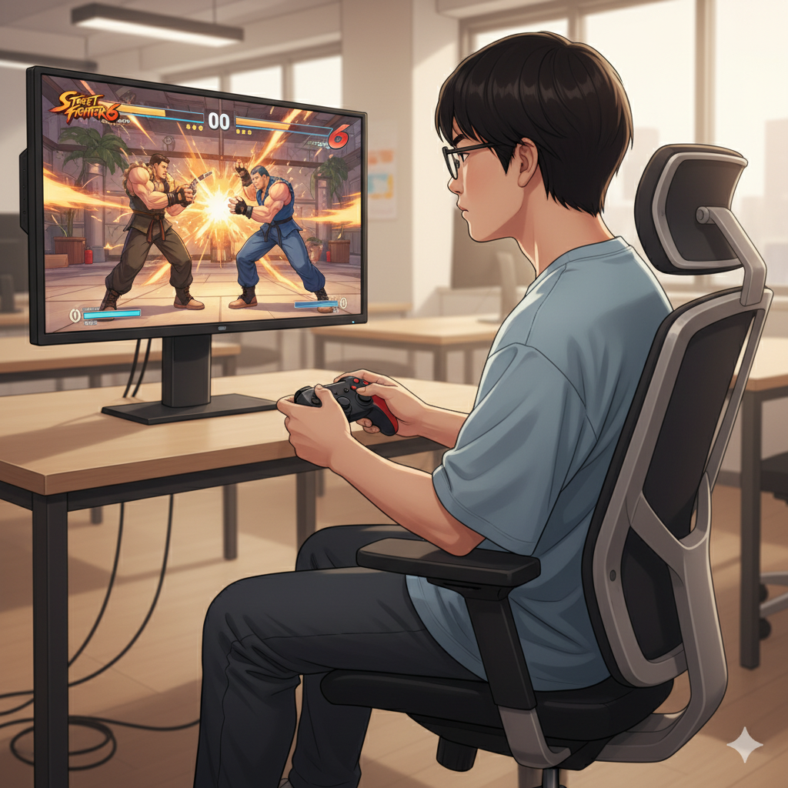
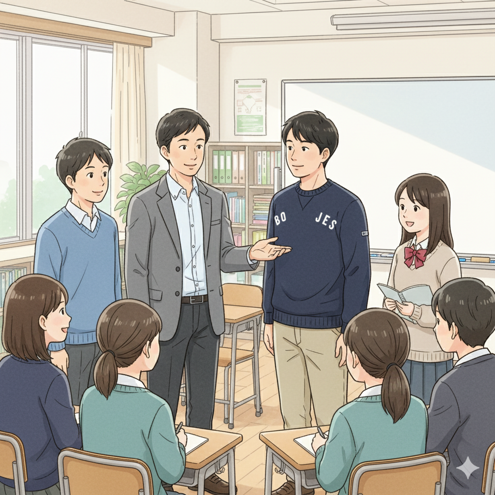
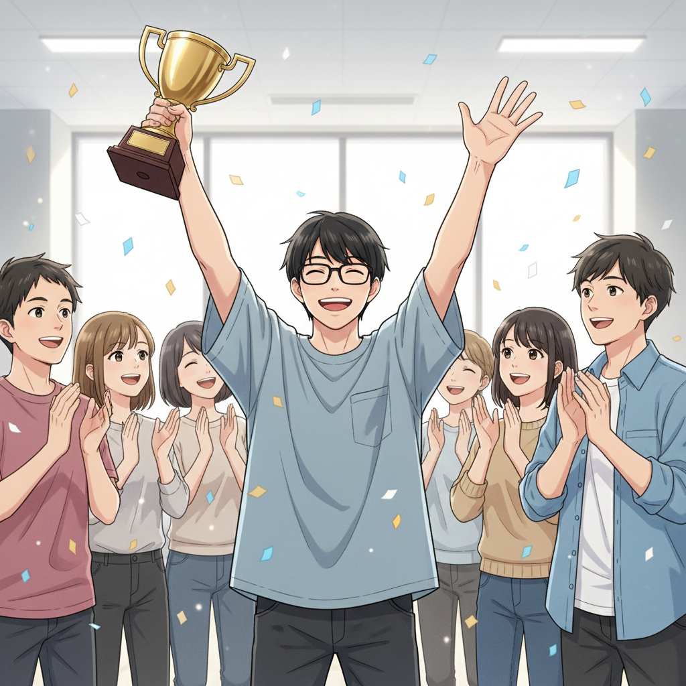
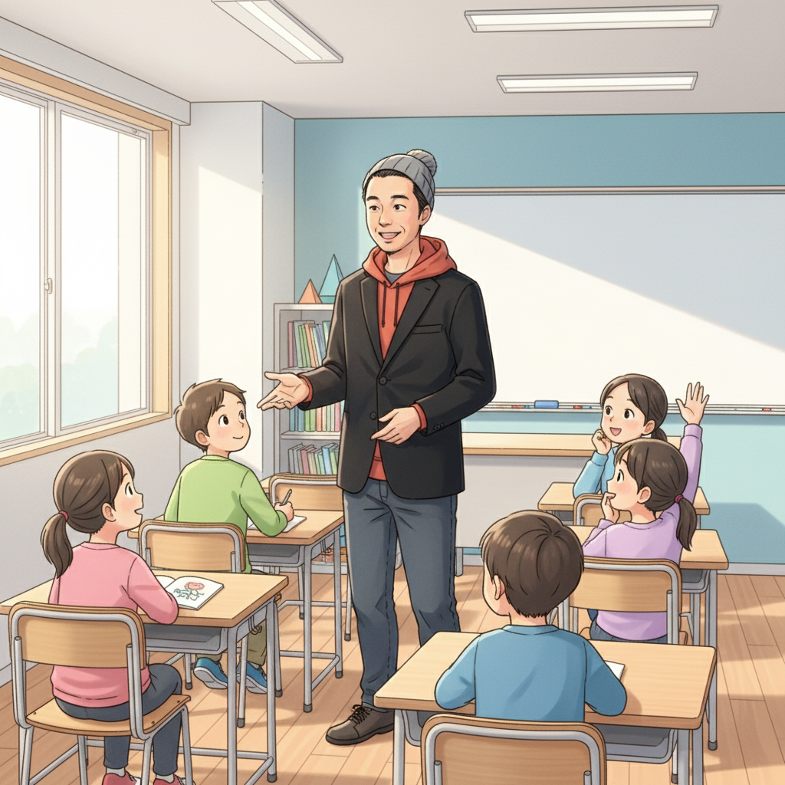

集中力が武器に！Y君、スト6の世界へ

「また負けた…」コントローラーを握る手が震えていた。Y君は、幼い頃から集中力が高く、好きなゲームには没頭するタイプ。でも、学校生活はうまくいかず、周りとの違いに悩んでいました。そんな時、高校で塾頭と出会い、if塾の門を叩くことに。
塾頭はY君の才能を見抜き、「その集中力は、eスポーツで活かせるかもしれない」とアドバイス。特に、瞬時の判断力と反応速度が求められる格闘ゲーム、ストリートファイター6（SF6）を勧めました。
最初は戸惑っていたY君でしたが、持ち前の集中力を発揮し、猛練習を開始。ICTスキルを活かして、対戦動画を分析し、戦略を練り上げました。ASDの特性である並外れた集中力と、if塾のICT教育がY君の才能を開花させたのです。
if塾での出会いと成長：仲間との絆が自信に

if塾には、Y君と同じように、発達特性を持ちながらも、それぞれの才能を活かして活躍している仲間がたくさんいます。塾長もその一人。ADHD・ASDの診断を受けながらも、塾頭との出会いをきっかけに国立大学に進学し、自身の経験を活かして後輩たちを支援しています。
Y君は、塾長や他の仲間たちとの交流を通して、自分の特性を理解し、受け入れられるようになりました。「自分だけじゃないんだ」という安心感と、仲間からの励ましが、Y君の自信につながりました。
if塾では、eスポーツだけでなく、プログラミングやデザインなど、様々な分野でICT教育を行っています。それぞれの興味や才能に合わせて、個別のカリキュラムを作成し、小さな成功体験を積み重ねることで、自己肯定感を高めていきます。発達障害 プログラミングは得意な分野を伸ばす良い機会になるかもしれません。
大会優勝！才能は障害ではなく、強みになる

努力を重ねたY君は、ついにストリートファイター6の大会で優勝！会場には、if塾の仲間たちが応援に駆けつけ、喜びを分かち合いました。Y君の優勝は、発達特性を持つ子どもたちに大きな希望を与えました。
「僕にもできるんだ」Y君は、優勝インタビューで語りました。「if塾で出会った仲間たちと、塾頭のサポートがなければ、今の僕はなかった。自分の才能を信じて、努力すれば、必ず道は開ける。」
if塾は、Y君のように、発達特性を持つ子どもたちの才能を信じ、可能性を最大限に引き出すためのサポートを行っています。ASD ICT 才能を伸ばし、自分らしい成長を遂げるための場所。それがif塾です。
一歩踏み出す勇気を！if塾が応援します

もしあなたが、Y君のように、自分の特性に悩みを抱え、自信をなくしているなら、ぜひif塾に相談してください。私たちは、あなたの才能を見つけ、伸ばすためのサポートを惜しみません。小さな一歩を踏み出す勇気を、私たちが応援します。
if塾では、無料体験授業や相談会を随時開催しています。お気軽にお問い合わせください。あなたとの出会いを、心から楽しみにしています。
🎯 興味を持っていただいた方へ
if塾では、発達特性を持つ子どもたちの「好き」を「才能」に変える教育を行っています。現在の記事内容と実際の活動に大きなズレはありませんが、詳細については直接お問い合わせください。
📌 記事について
この記事は、塾頭による完全自動化への挑戦としてAIが自動生成しています。将来的には塾頭が執筆しているような記事になることを目指しており、現時点では事実と異なる内容が含まれる可能性があります。最新の正確な情報については、お問い合わせフォームよりご確認ください。
🤖 Generated with AI - if塾のブログ自動化プロジェクト